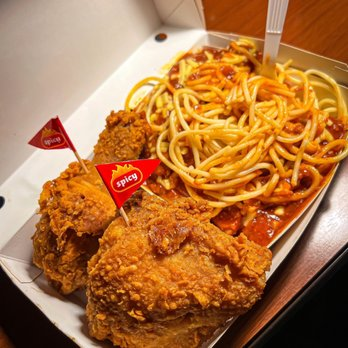

New York City is a paradise for food lovers, offering a diverse range of cuisines from around the world. From classic New York-style pizza and bagels to gourmet meals and international street food, there's something for every taste. During my visit, I was amazed by the variety and quality of the food—every bite was a delight. While dining in the city can be quite expensive, I found it absolutely worth it for the unique flavors and unforgettable experience.
id="Ellen's Star Dust">This tender chicken dish is from Ellen’s Stardust Diner, one of New York City's most iconic and entertaining restaurants. Located in Times Square, Stardust is famous not just for its classic American comfort food, but also for its singing waitstaff—many of whom are aspiring Broadway performers. Dining there is a unique experience, as you're treated to live musical performances right at your table while enjoying delicious meals like this one. The energy, talent, and fun atmosphere make it much more than just a place to eat—it's a show you’ll never forget.

As a Filipino, I sometimes find myself craving the familiar flavors of home, even while exploring new places. That’s why Jollibee quickly became one of my favorite restaurants in New York City. Known as the most beloved fast-food chain in the Philippines, Jollibee offers comforting and authentic Filipino dishes—from crispy Chickenjoy and sweet-style spaghetti to savory chicken joy. The taste instantly brought back memories of home, making it a special place for me during my stay. It was comforting to enjoy the same delicious flavors in a completely different part of the world.